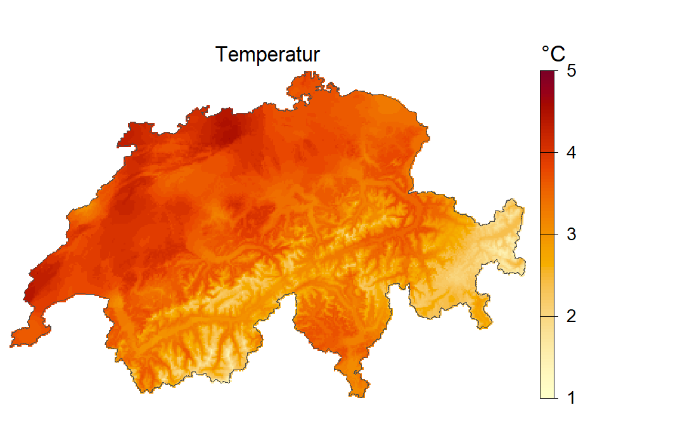
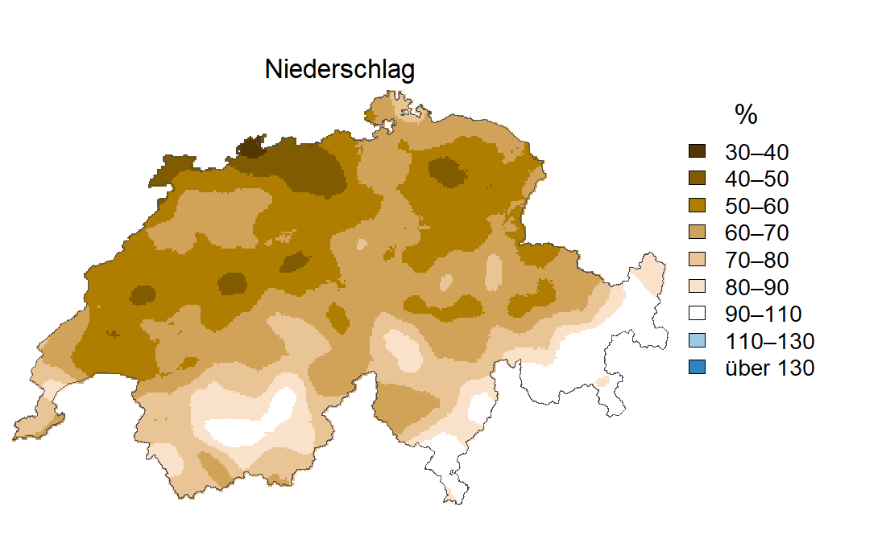
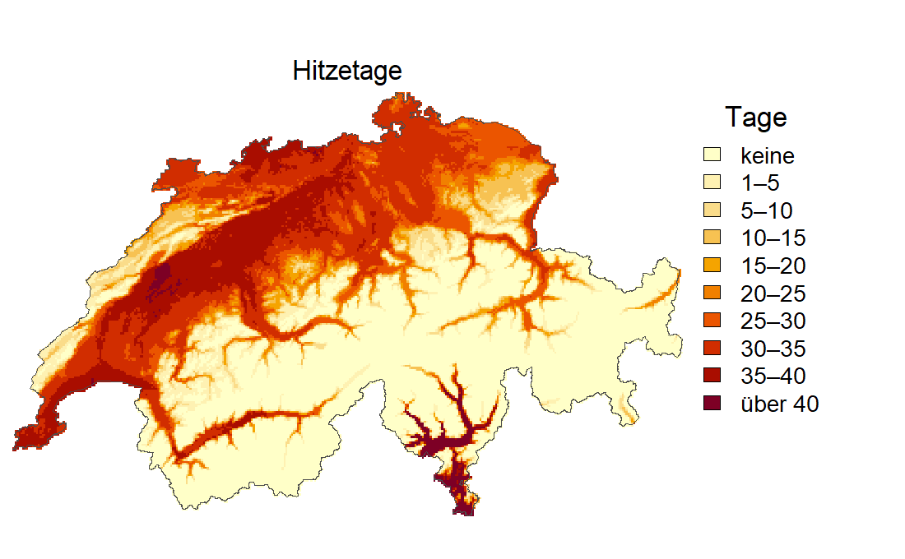
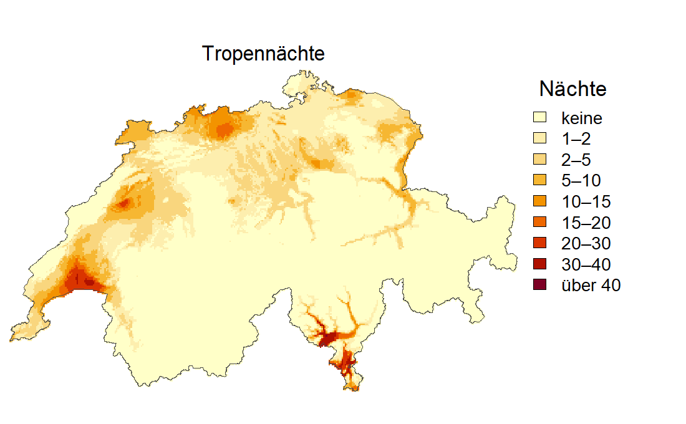
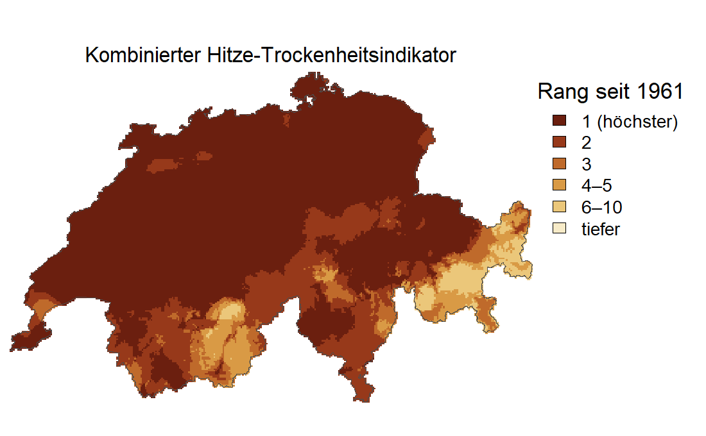
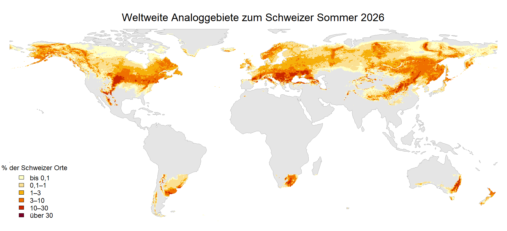

Detaillierte Infos zu den Messungen und Analysen des Sommers 2026 in der Schweiz findest du bei MeteoSchweiz, insbesondere im Klimabulletin zum Sommer (Juni–August) 2026. Hier sind nur einige der wichtigsten Merkmale des Extremsommers aus diesen Dokumenten zusammengefasst.
Gemäss MeteoSchweiz steuern wir mit den weltweit derzeit geplanten Klimaschutzmassnahmen bis Ende Jahrhundert auf eine «3-Grad-Welt» zu, eine Welt, die sich im Vergleich zur vorindustriellen Zeit um 3 °C erwärmt hat. In einer solchen Zukunft wird der Sommer 2026 in Bezug auf die Temperatur ein durchschnittlicher Sommer sein. In Bezug auf den Niederschlag war der Sommer 2026 sogar noch trockener als ein durchschnittlicher Sommer in der Schweiz einer 3-Grad-Welt.
In den folgenden Abbildungen siehst du, in welchen Regionen der Schweiz der Sommer 2026 besonders heiss und trocken war.




Juni bis August, 1-km-Gitterdaten von MeteoSchweiz; eigene Auswertung mit denselben Daten wie im Spiel (siehe Methoden).
Gemäss dem Klimabulletin lagen die Temperaturen in der West- und Nordwestschweiz sowie stellenweise auf der Alpensüdseite um 4 °C oder mehr über dem Mittel 1991–2020. Weniger gross war der Unterschied in den hohen Lagen der Alpen und im Südosten des Landes. Besonders wenig Regen fiel im Mittelland und am Alpennordhang: verbreitet nur 45 bis 70 % der sonst üblichen Sommermenge. Im Wallis, im Engadin und auf der Alpensüdseite war der Sommer dagegen kaum trockener als üblich (etwa 80 bis 105 %). Im Flachland und in den Tälern zählten die Messstationen rund 35 bis 55 Hitzetage. Am meisten Tropennächte gab es mit 50 in Locarno-Monti. Auch an Seen und in Städten blieb es nachts oft über 20 °C. Wie stark eine Stadt nachts warm bleibt, zeigt Zürich: In der Stadt (Station Kaserne) gab es 38 Tropennächte, am ländlichen Stadtrand (Station Affoltern) keine einzige.
Weil der Süden grösstenteils heiss, aber nicht trocken war, findet das Spiel für Orte im Tessin oder im Engadin andere Analoggebiete als für Orte im Mittelland.
Der Sommer 2026 war also heiss und trocken zugleich. Im Spiel zeigen wir für deinen ausgewählten Ort einen kombinierten Hitze- und Trockenheitsindikator, der einen Vergleich von 2026 mit früheren Jahren bezüglich Hitze und Trockenheit erlaubt (Details dazu auf der Methodenseite).
Die folgende Abbildung zeigt den Indikator für die ganze Schweiz über die Jahre 1961–2026. Kein anderer Sommer seit 1961 erreichte einen so hohen Wert wie 2026.
Gemeinsamer Hitze-Trockenheitsindikator, relativ zu 1991–2020
Jeder Balken ist ein Sommer (Juni bis August). Der Indikator kombiniert die Mitteltemperatur und den Niederschlag der ganzen Schweiz, beide relativ zu den Sommern 1991–2020. Ein heisser, aber nasser Sommer kann deshalb neutral erscheinen. Daten: MeteoSchweiz; eigene Auswertung.
Auch lokal war 2026 vielerorts aussergewöhnlich: An knapp 90 % der Orte in der Schweiz war es der heisseste Sommer seit 1961, an rund 16 % zugleich der trockenste. Im kombinierten Hitze-Trockenheitsindikator erreichte 2026 an gut zwei Dritteln der Orte den höchsten Wert seit 1961, an über 90 % einen der drei höchsten Werte.

Motiviert von diesen Fakten zeigen wir dir in diesem Hitzesommer-Guesser-Spiel, wo ein Sommer, wie wir ihn 2026 in der Schweiz erlebt haben, bereits heute zum Alltag gehört. Am Schluss des Spiels siehst du ausserdem, wie aussergewöhnlich der Sommer 2026 an deinem Ort im Vergleich zu den Sommern 1991–2020 war, bezüglich Temperatur, Niederschlag, Hitzetagen und Tropennächten.
Als «Alltag» gilt im Spiel ein Sommer, wie er in den Jahren 1991–2020 typisch war. Das ist eine übliche Referenzperiode der Klimastatistik. Seither ist es allerdings weiter wärmer geworden: Gegenüber dem Mittel 1991–2020 war der Sommer 2026 in der Schweiz 3,4 °C wärmer. Im heutigen Klima ist ein so heisser Sommer wie 2026 gesamtschweizerisch ungefähr alle 20 bis 50 Jahre zu erwarten (MeteoSchweiz-Blog; diese Angabe betrifft nur die Temperatur).

Der Sommer hatte unter anderem diese Folgen (gemäss Klimabulletin, mit Auswertungen des BAFU; zur Landwirtschaft gemäss BFS, zur Gesundheit gemäss Swiss TPH):